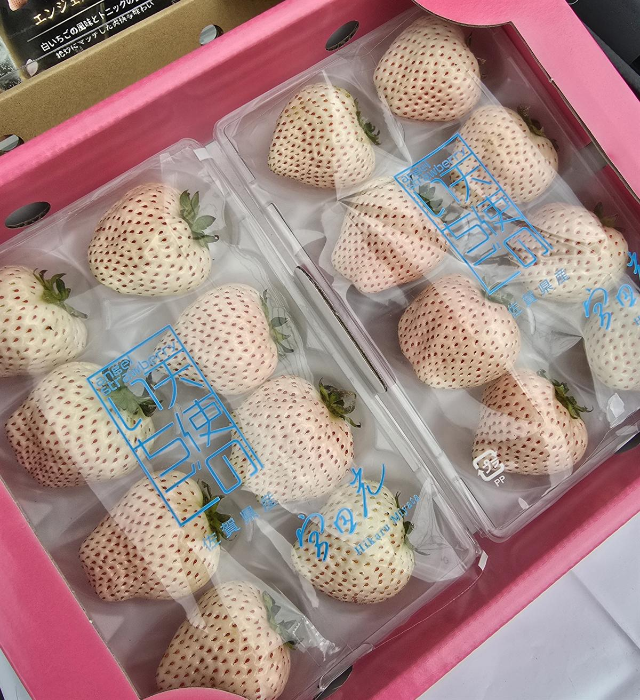
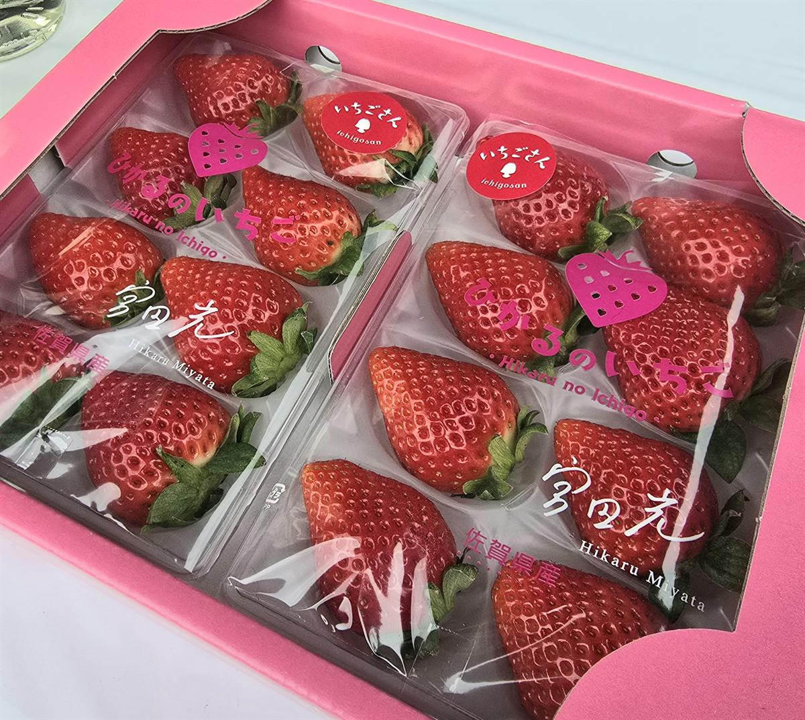
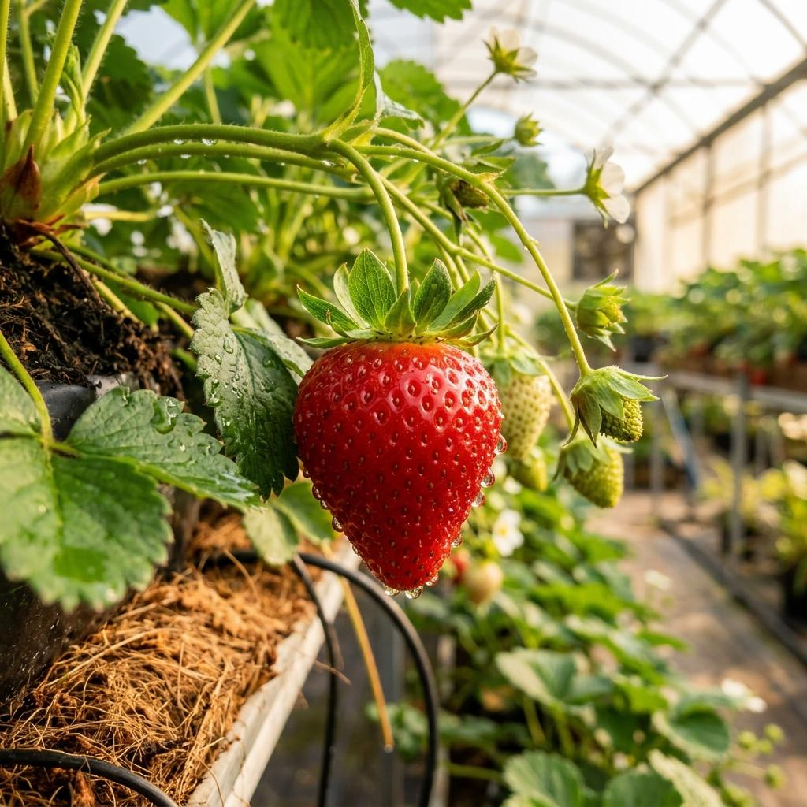
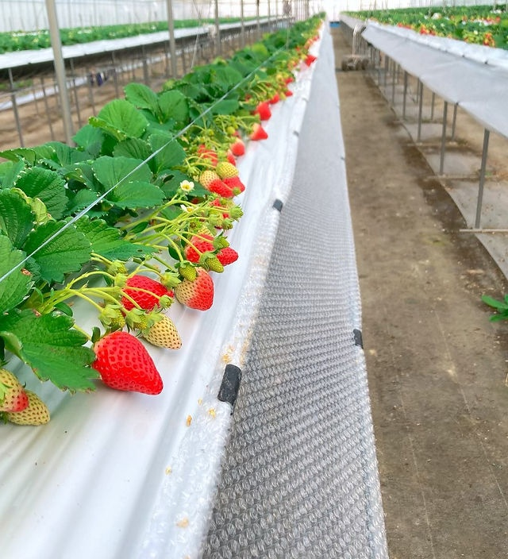

白の奇跡、
その特別な一粒。
太陽の恵みと、徹底した温度・湿度管理のもとで大切に育てられる「白いちご」。 色づく直前の最も美しい状態を見極め、一粒ずつ丁寧に手作業で収穫されます。
市場には滅多に出回らない、白く艶やかな果肉と、口いっぱいに広がる芳醇な香り、そして上品な甘み。 大切な方へのギフトや、自分への特別なご褒美にふさわしい、極上のフルーツです。
太陽の恵みと、徹底した温度・湿度管理のもとで大切に育てられる「白いちご」。 色づく直前の最も美しい状態を見極め、一粒ずつ丁寧に手作業で収穫されます。
市場には滅多に出回らない、白く艶やかな果肉と、口いっぱいに広がる芳醇な香り、そして上品な甘み。 大切な方へのギフトや、自分への特別なご褒美にふさわしい、極上のフルーツです。
代表の宮田光は、元美容師・モデルという異色の経歴を持ちます。 「美しさ」を表現してきた感性を農業に取り入れ、新しい農家の形を日々追求しています。
おじいちゃんの代から受け継がれたいちご作りの技術を守りつつ、奥さん、娘さん、そして愛犬2匹とともに笑顔が絶えない温かい農園を営んでいます。
「品質と味には、絶対に妥協しません。自分が納得できないいちごは、どれほど美しく見えても出荷しません。」
ひかるのうえんが誇る、自信作のご紹介。

数量限定
定番人気佐賀の豊かな大地と温暖な気候で育った、鮮やかな赤色の完熟いちご。一口かじれば、みずみずしい果汁と濃厚な甘みが口いっぱいに広がります。白いちごとはまた異なる、王道の美味しさをお楽しみください。

